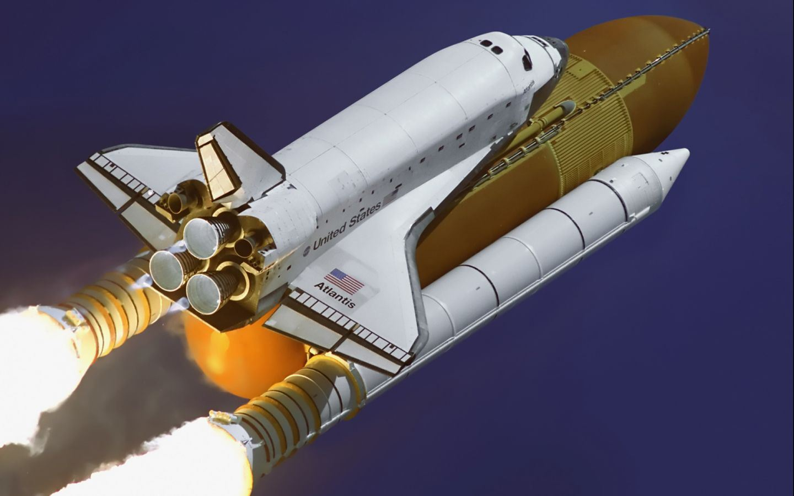
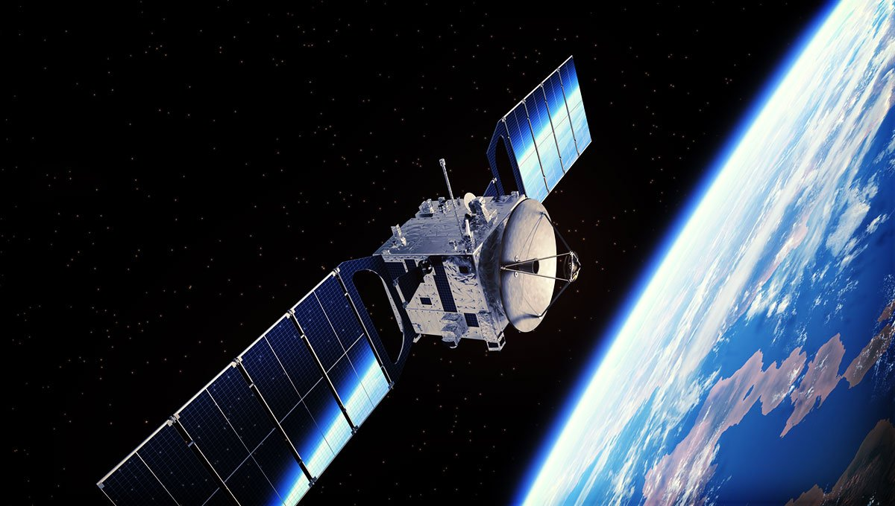
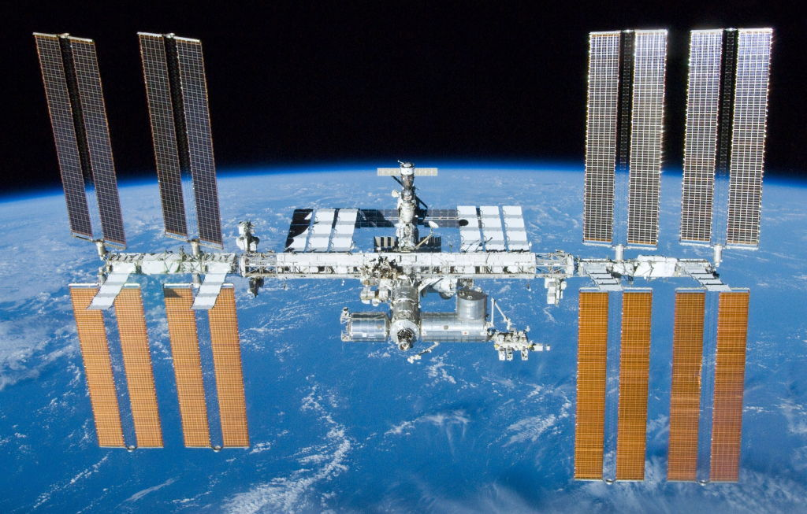

| Naves |
Una nave espacial es un vehículo o máquina diseñada para volar en el espacio exterior. Las naves espaciales, un tipo de satélite artificial, se utilizan para una variedad de propósitos, que incluyen comunicaciones, observación de la Tierra, meteorología, navegación, colonización espacial, exploración planetaria y transporte de humanos y carga. |
 |
| Satelites |
Estos tienen usos muy diversos, como captar imágenes del Sol, la Tierra y otros planetas, o explorar el espacio para estudiar los agujeros negros, y las estrellas y galaxias remotas. También están los satélites de comunicaciones, los satélites meteorológicos y la Estación Espacial Internacional. |
 |
| Estacion Espacial |
Una estación espacial es una construcción artificial diseñada para hacer actividades en el espacio exterior, con diversos fines. Se distingue de otra nave espacial tripulada por su carencia de un sistema de propulsión principal (en lugar de eso, otros vehículos son utilizados como transporte desde y hacia la estación), y de medios de aterrizaje. |
 |